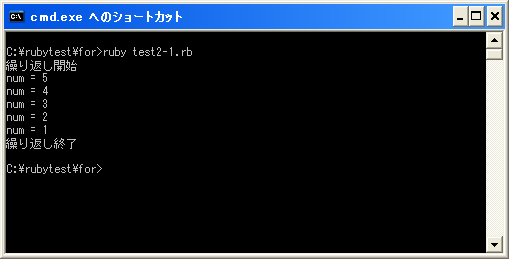

until文
広告
「until」文は指定した条件式が偽(false)の間、繰り返し処理を行います。「while」文との違いは「while」文が真(true)の間繰り返しを行うのに対して「until」文は偽(false)の間繰り返すという点だけです。書式は次のようになっています。
until 条件式 do 実行する処理1 実行する処理2 end
※「do」は省略可能です。
条件式がが偽(false)となる間は「do」から「end」までに記述された文が上から順に実行されます。そして改めて条件式の判断が行われます。これを条件式が真(true)になるまで繰り返します。
例えば次のように使います。
num = 2
until num <= 0 do
print("num = ", num)
num = num - 1
end
print("End")
条件式で変数「num」に代入されている値が「0」以下かどうかを評価しています。
実際の実行される流れは次のようになります。
1) 変数「num」に「2」を代入 2) 条件式を評価。変数「num」は0以下ではないので繰り返しを実行 3) 変数「num」の値を出力 4) 変数「num」に代入されている値を1だけ減算。変数「num」は「1」が代入される 5) 「end」まで達したので再度「until」文の先頭へ移動 6) 条件式を評価。変数「num」は0以下ではないので繰り返しを実行 7) 変数「num」の値を出力 8) 変数「num」に代入されている値を1だけ減算。変数「num」は「0」が代入される 9) 「end」まで達したので再度「until」文の先頭へ移動 10) 条件式を評価。変数「num」は0以下となるため「until」文を終了 11) 「End」を出力
「while」文の場合と同様に「until」文でも繰り返しの度に条件式が変化するようにしておかなければ無限ループとなってしまいますので注意して下さい。
サンプルプログラム
では簡単なプログラムで確認して見ます。
#! ruby -Ku
require "kconv"
num = 5
print(Kconv.tosjis("繰り返し開始¥n"))
until num <= 0 do
print("num = ", num, "¥n")
num = num - 1
end
print(Kconv.tosjis("繰り返し終了¥n"))
上記のプログラムを「test2-1.rb」として保存します。文字コードはUTF-8です。そして下記のように実行して下さい。

( Written by Tatsuo Ikura )
Profile

著者 / TATSUO IKURA
初心者～中級者の方を対象としたプログラミング方法や開発環境の構築の解説を行うサイトの運営を行っています。